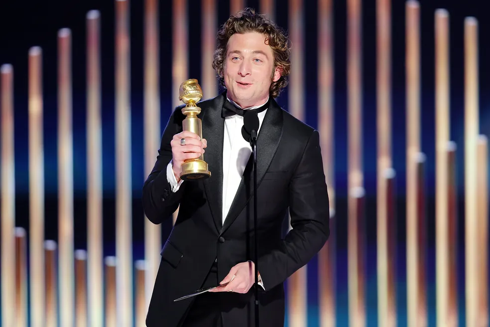

Globo de Ouro 2023: confira a lista
de premiados da 80ª edição:'
''Os Banshees de Inisherin', 'Abbott Elementary' e 'Os Fabelmans'
foram os grandes destaques'
Santos sabe muito bem do impacto de um jogador de futebol além dos gramados. O garoto de
Osasco, que realizou seu sonho no esporte, está inspirando as próximas gerações.
Por Redação Foby Boni
30/05/2023 16h28 Atualizado


Vale ressaltar que neste ano, o Globo de Ouro tentou reparar o "cancelamento" que sofreu em 2021 e 2022.
Isso porque as duas últimas edições foram carimbadas pela grave acusação de racismo. Uma série de denúncias
publicadas pelo jornal Los Angeles Times em 2021, revelaram a preferência por votantes brancos — sem votos
Para 2023, que também marca o retorno da transmissão feita pelo canal de TV NBC, a Associação da Imprensa Estrangeira
de Hollywood (HFPA, em inglês) assumiu o compromisso de mudar seu posicionamento. Os organizadores do Globo de Ouro
admitiram 103 novos eleitores de 62 países fora dos Estados Unidos, elevando o total de eleitores para 200. Ainda
conforme a NBC, o total de votantes do prêmio agora é 52% feminino e 51,5% não-branco, com 19,5% de membros latinos,
12% asiáticos, 10% negros e 10% do Oriente Médio.negros entre 2002 e 2021 — e corrupção de seus membros.
Confira a lista de vencedores:
Melhor Ator Coadjuvante em Filme
Ke Huy Quan (“Tudo em Todo Lugar ao Mesmo Tempo - Amazon Prime Video”)
Melhor Atriz Coadjuvante em Filme
Angela Bassett (“Pantera Negra: Wakanda Forever”)
Melhor Ator Coadjuvante de TV
Tyler James Williams (“Abbott Elementary - Star+”)
Melhor Trilha Sonora em Filme
Justin Hurwitz (“Babilônia”)
Melhor Canção Original
“Naatu Naatu” de “RRR: Revolta, Rebelião, Revolução” por Kala Bhairava, M. M. Keeravani, Rahul Sipligunj
Melhor Ator em Série de TV, Musical ou Comédia
Jeremy Allen White (“O Urso - Star+”)
Melhor Atriz em Série de TV, Musical ou Comédia
Quinta Brunson (“Abbott Elementary - Star+”)
Melhor Ator em Filme, Musical ou Comédia
Colin Farrell (“Os Banshees de Inisherin”)
Melhor Atriz em Filme, Musical ou Comédia
Michelle Yeoh ("Tudo em Todo Lugar ao Mesmo Tempo")
Melhor Filme em Animação
Guillermo Del Toro ("Pinóquio - Netflix")
Melhor Ator em Filme, Drama
Austin Butler (“Elvis”)
Melhor Atriz em Série de TV, Drama
Zendaya (“Euphoria - HBO Max”)
Melhor Atriz Coadjuvante de TV
Julia Garner (“OZARK - Netflix”)
Melhor Atriz em Filme de Drama
Cate Blanchett (“Tár”)
Melhor Filme Estrangeiro
Santiago Mitre (“Argentina, 1985”)
Melhor Roteiro de Filme
Martin McDonagh (“Os Banshees de Inisherin”)
Melhor Diretor em Filme
Steven Spielberg (“Os Fabelmans“)
Melhor Atriz Coadjuvante em Série Limitada, Antológica para a TV
Jennifer Coolidge (“The White Lotus - HBO Max”)
Melhor Atriz em Série Limitada, Antológica para a TV
Amanda Seyfried (“The Dropout - Star+”)